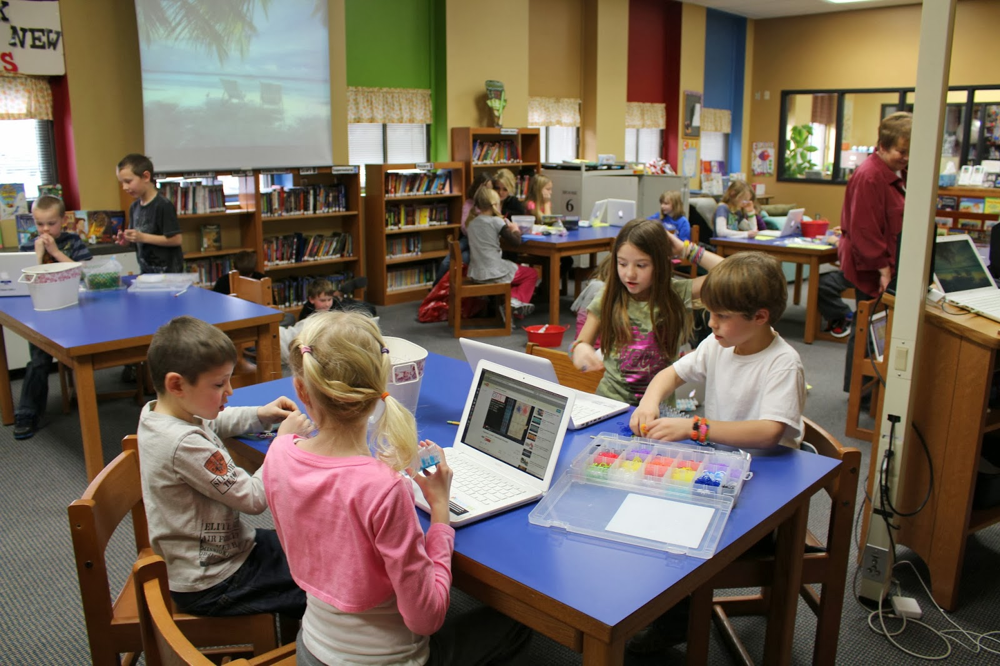

Campus life
Eco-Friendly Canteen
"Was built in March - 2017"
The lower administrative floors and the facilities for additional activities like the Laboratories, AV rooms and art classes on the upper floors are connected with a series of inner courts that are extendable into outdoor learning areas, blend to become a green corridor where the students can interact in a natural environment.
Main Stair-case
"Was built in April - 2017"
The landscape is set to create a natural and productive environment where the learning can be extended to the outdoors making the students sensitive to ecological factors by maintaining the biodiversity of the campus. The structure also responds to the climate, reducing the dependency on mechanical sources for ventilation making it an energy efficient building.

Breakout Space (There in Every Classroom)
"Was built in May - 2017"
The programmatic values of the school believe in breaking away from the standard scholastic teaching system. The design embraces the creative enterprise of ‘flexible learning’ to cater to the needs of a heterogeneous group of learners. The site is a land with steep sloping natural topography and several existing trees making it an ideal setting for imparting educating in a green environment. The premise is designed to be safe and close knit yet completely flexible creating an encouraging and interactive environment.
Achivements
“We’re throwing the dictionary at you, and you’re showing the dictionary who’s boss,” Dr. Jacques Bailly, the Scripps National Spelling Bee’s official announcer said Thursday night after 17 rounds of competition — at which point a record-setting eight spellers remained in the running. “We are now in uncharted territory,” Bailly continued. “We do have plenty of words remaining on our list, but we’ll soon run out of words that will possibly challenge you, the most phenomenal assemblage of super-spellers in the history of this competition.” In an historic change to the rules listed on the bee’s website, Bailly then announced that the competition would conclude after 20 rounds, regardless of how many spellers remained. At that point, they would all be declared “co-champions.”
.JPG)
Pole - Scholes R.K. Puram organized the Sports Day on 27 December 2017 with great enthusiasm and zeal. The Chief Guest of this grand event was Mr. V.K. Shunglu, Chairman of Pole - Scholes Society and Pole - Scholes R.K.Puram Managing Committee. Other prominent dignitaries who graced the occasion included Rear Admiral M. M. Chopra, Vice Chairman of Pole - Scholes Society and Member of Pole - Scholes R.K. Puram Managing Committee; Mr Pramod Grover, Hony. Treasurer of Pole - Scholes Society and Vice Chairman, Pole - Scholes R.K. Puram Managing Committee; Dr D.R. Saini, Director Sports, Pole - Scholes Society and Former Principal of Pole - Scholes R.K. Puram; Dr Zeenat Khader, Joint Secretary, Pole - Scholes Society and Prof. B.P. Khandelwal, Member Pole - Scholes Society and Pole - Scholes R.K. Puram Managing Committee. The Principal, Ms. Vanita Sehgal, Vice Principals, Dr. Renu Nayar and Ms. Padma Srinivasan along with the Head Mistress, Ms. Rashmi Malhotra were also present. The Head of the Physical Education Department, Mr. N. Suresh, supported by his team of teachers ensured the event ran smoothly. The Sports Day was celebrated in keeping with the spirit of the Olympic motto, “Citius, Altius, Fortius”.
Free Google Slides theme and PowerPoint template and the award goes to… You! Has any of your students excelled in Sciences, Maths, English or Astronomy? Great! Give them a Primary School end of the year award with this creative presentation, perfect for distance learning! This theme is based on an awards presentation. The design of the slides is simple: most of the time, it has a cream background with some funny doodles. Depending on the type of award, the background is adorned with different hand-drawn sketches. For example, in the case of the astronomy award, you’ll find stars and rockets. The sans-serif typefaces recreate this freehand style, which is perfect for the younger ones!
What's New in School
-
Rebuilding the Library
Libraries are no longer being used as places to store and distribute books, nor do they serve as place for only studying. With changes in technology libraries have been forced to change their ways of operating and instead of closing their doors they are adapting by becoming People-Centric instead of being Book-Centric. They become community resources for collaborating, creating, and making.
-
GIF Making compitation
Here we make the students use and practice the coding skills the made through what we teach them, by making them do a gif and publish it on google like the one you see before this text and the topic of the gif is changed every year but the concept stays the same which is the school.
Alumni
List of Success full Alumnis of our School
Pole Alexander Scholes
William Shatner
James Gosling